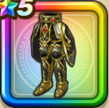

ルビスの天鎧下
攻略班 8.0点 / 守備力減耐性+10%混乱耐性+5%【バトマス】斬撃・体技耐性+2%【魔法戦士】呪文耐性+2%【パラディン】ブレス耐性+2%守備力減耐性+10%混乱耐性+5%デイン属性斬撃・体技ダメージ+5%会心率+3%
くわしい特徴
【レベル別習得スキル】 Lv1守備力減耐性+10% Lv5さいだいMP+5 Lv8すばやさ+5 Lv10混乱耐性+5% Lv12【バトマス】斬撃・体技耐性+2% Lv12【魔法戦士】呪文耐性+2% Lv12【パラディン】ブレス耐性+2% Lv15デイン属性斬撃・体技ダメージ+5% Lv18守備力減耐性+10% Lv20会心率+3% Lv23守備力+7 Lv25混乱耐性+5% 【限界突破スキル】 1凸攻撃力+5 2凸守備力+5 3凸すばやさ+7 4凸さいだいHP+10